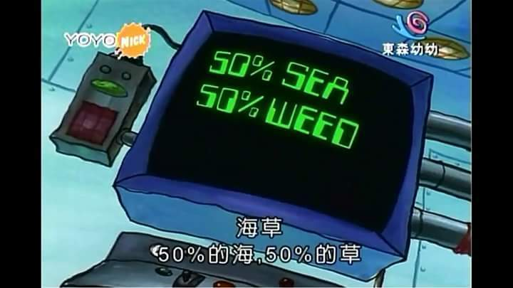
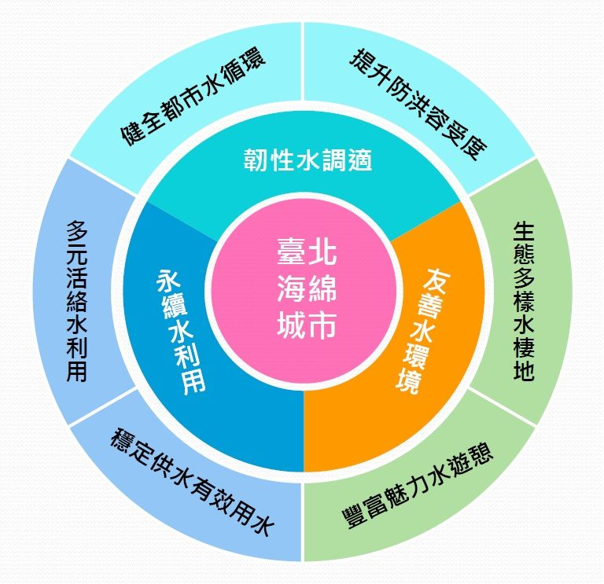
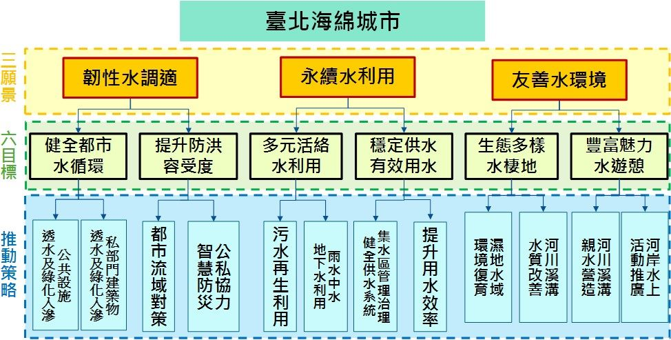

海綿城市
什麼是海綿城市?
海綿城市是一個比喻的說法，是一種在城市中建設防洪防澇並兼有生態環保功能的新型城市模型。比如建設透水路面以代替非透水的路面。 國際通用術語為「低影響開發雨水系統構建」，下雨時吸水、蓄水、滲水、淨水，需要時將蓄存的水釋放並加以利用，實現雨水在城市中自由遷移。
「海綿城市」是推動綠色建築建設，低碳城市發展，智慧城市形成的創新表現，是現代綠色新技術與社會、環境、人文等多種因素的有機結合，是社會進步的奠基石。「海綿城市」材料實質性應用，表現出優秀的滲水、抗壓、耐磨、防滑以及環保美觀多彩、舒適易維護和吸音減噪等特點，成了「會呼吸」的城鎮景觀路面，也有效緩解了城市熱島效應，讓城市路面不再發熱。


海綿城市的特點有哪些?
海綿城市有幾大特點：
1.天上下的雨儘量就地消化。這就是通常所說的蓄水。有地表蓄水如水庫和湖泊。有地下蓄水如透水路面和地下水窖。
2.流出本地的水流必須是清澈如甘泉。這就是通常所說的污水治理。本地所產生的污水必須在本地治理。不能把治理污水的負擔留到下游。
3.留在本地對地表蓄水和地下的蓄水必須加以重複地高效地利用。
4.每個海綿城市的區塊要儘量滿足本地所有的用水需求。
5.逐漸提升海綿城市的生態環境功能。
6.海綿城市的理想目標就是將海綿城市建設成為新興的青山綠水，使得海綿城市返歸為自然生態的一個組成部分。